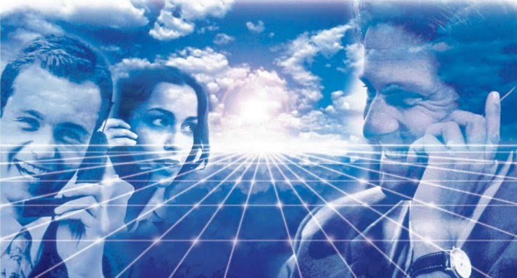
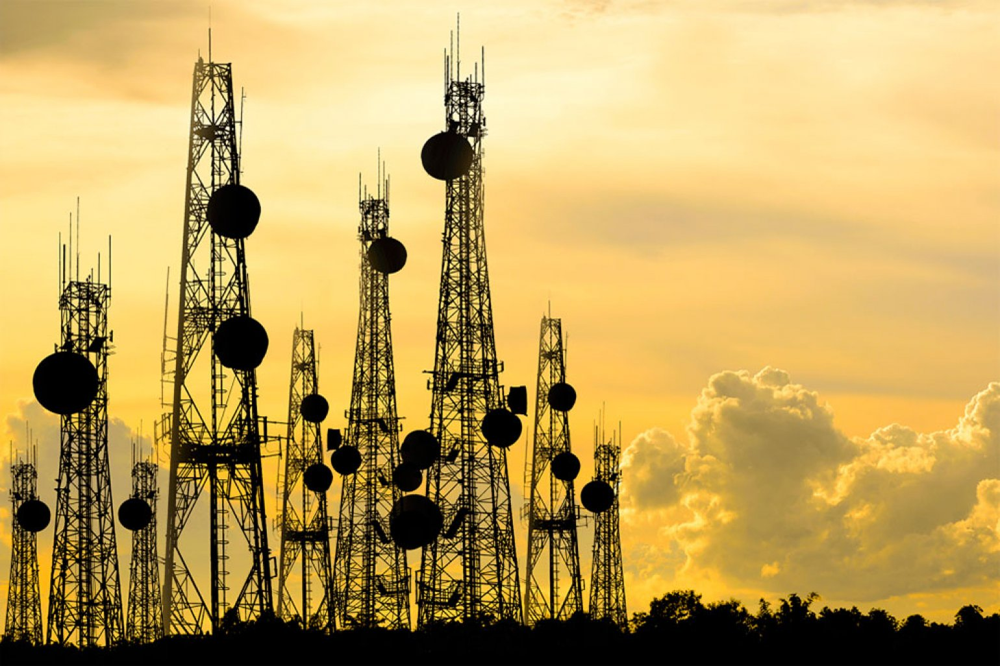
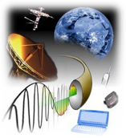
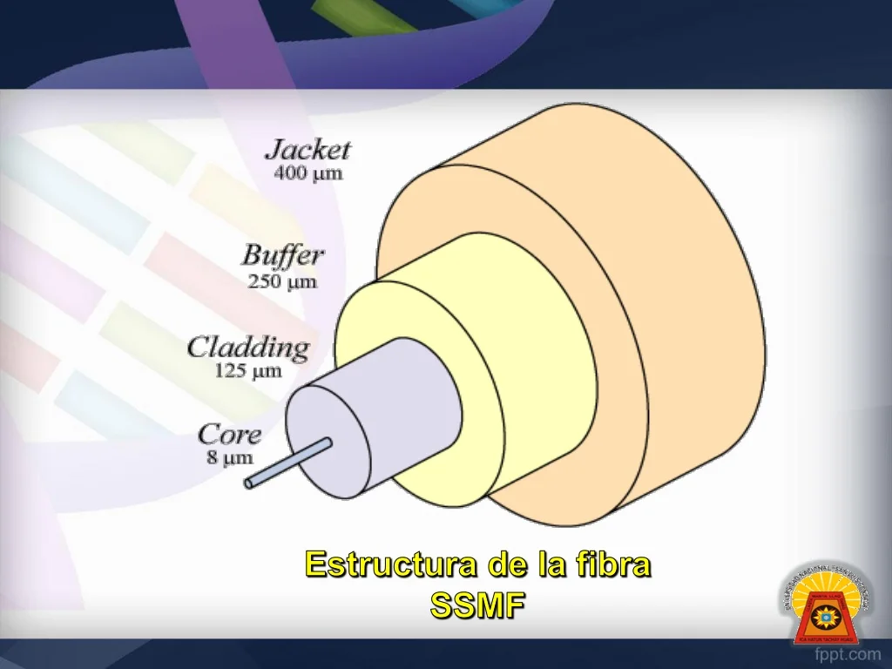
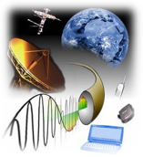
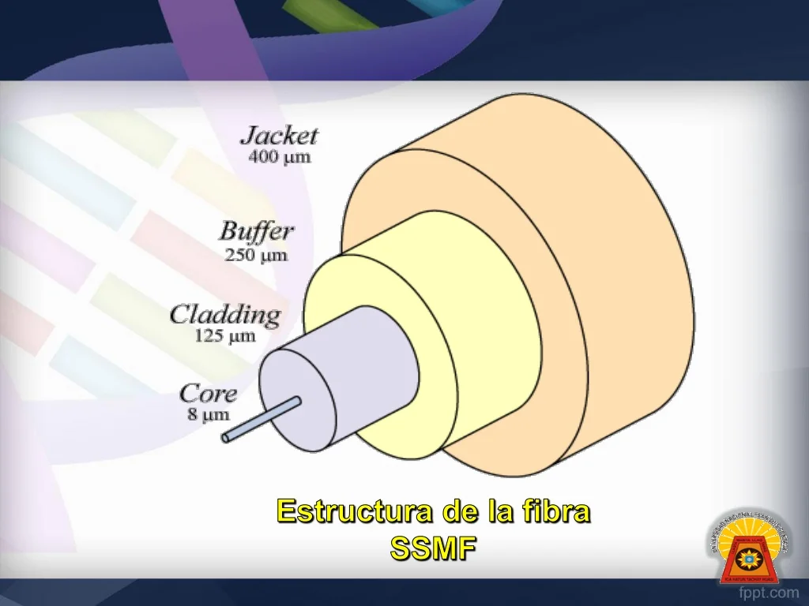

La evolución de los medios físicos de las telecomunicaciones ha dado forma a nuestro mundo de una
manera que va más allá de la simple transferencia de datos. A medida que examinamos estos
medios,
surge una gama de diversas cuestiones que rápidamente se vuelven cruciales para comprender
plenamente su impacto en la sociedad y el medio ambiente.
Desde un punto de vista ético, la privacidad y la seguridad de los datos son cuestiones
apremiantes.
La recopilación y el almacenamiento de información personal plantean preguntas sobre la
protección
de la privacidad y la ética de la vigilancia masiva. La neutralidad en la red se suma a la
ecuación
ética, ya que garantizar un acceso equitativo a la información es esencial para preservar la
igualdad de oportunidades en un mundo digital cada vez más interconectado.
En términos ecológicos, la expansión de las telecomunicaciones conlleva un consumo de energía
significativo, lo que puede generar emisiones de carbono y contribuir al cambio climático. La
gestión de residuos electrónicos y la extracción de recursos minerales para la fabricación de
equipos también plantean cuestiones ambientales importantes. Sin embargo, la adopción de fuentes
de
energía renovable, la eficiencia energética y la promoción del reciclaje pueden atenuar el
impacto
ecológico.
Por otra parte, existe también una cuestión política, las regulaciones gubernamentales y la
censura
en las telecomunicaciones plantean cuestiones sobre la libertad de expresión y la intervención
estatal en la infraestructura de comunicaciones. La lucha por la neutralidad en la red y la
regulación de la privacidad también se entrelazan con el ámbito político.
Finalmente, el aspecto económico se relaciona con la inversión en infraestructura de
telecomunicaciones y su impacto en el desarrollo económico. La equidad en el acceso a los
servicios
de comunicación y la influencia de la economía global en la industria de las telecomunicaciones
son
preocupaciones económicas esenciales.
Hoy en día las telecomunicaciones son un componente esencial de nuestra vida moderna, y su
estudio
no puede ignorar todas las implicaciones que conllevan su implementación y desarrollo. A medida
que
avanzamos en la era digital, el abordar estos temas de manera equilibrada y ética se vuelve cada
más
importante para garantizar que las telecomunicaciones sigan siendo una fuerza positiva en la
sociedad y el medio ambiente.



 


